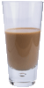

주간 음료
스페셜
레몬브리즈
허브, 미네랄, 부드러운 감귤에 레몬을 섞은 비타민이 풍부한 최고의 음료로 하루 종일 면역 계통을 최상의 상태로 유지할 수 있어요.

차가운 차이맛 음료
일반 차이티가 아닙니다. 이 음료는 마테차에 차이티 성분을 섞은 다음 얼음에 카페인 맛이 나는 초코릿을 살짝 넣은 음료입니다.
블랙 브레인 음료
기억력이 좋아지면 좋겠죠? 검은 우롱차와 에스프레소를 살짝 섞어 만든 블랙 브레인 음료를 드셔보세요.머리가 좋아지는 음료입니다.